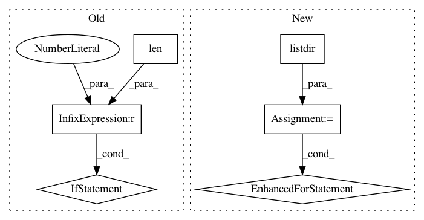

03d22bbb0177117498b3021e068611c6b9421e15,nilmtk/dataset_converters/wikienergy/download_wikienergy.py,,download_wikienergy,#Any#Any#Any#Any#,38
Before Change
chunk_start = chunk_start + chunk_size
// saves all chunks
if len(dataframe_list) > 0:
dataframe_concat = pd.concat(dataframe_list)
//dataframe_concat.to_csv(output_directory + str(building_id) + ".csv")
store.close()
conn.close()
def _wikienergy_dataframe_to_hdf(wikienergy_dataframe, store):
After Change
store = pd.HDFStore(hdf_filename, "w", complevel=9, complib="zlib")
// remove existing building yaml files in module dir
for f in os.listdir(join(_get_module_directory(), "metadata")):
if re.search("^building", f):
os.remove(join(_get_module_directory(), "metadata", f))
// get tables in database schema
sql_query = ("SELECT TABLE_NAME" +
" FROM INFORMATION_SCHEMA.TABLES" +
" WHERE TABLE_TYPE = "BASE TABLE"" +
" AND TABLE_SCHEMA="" + database_schema + """ +
In pattern: SUPERPATTERN
Frequency: 3
Non-data size: 6
Instances
Project Name: nilmtk/nilmtk
Commit Name: 03d22bbb0177117498b3021e068611c6b9421e15
Time: 2014-07-21
Author: oliparson@gmail.com
File Name: nilmtk/dataset_converters/wikienergy/download_wikienergy.py
Class Name:
Method Name: download_wikienergy
Project Name: QUANTAXIS/QUANTAXIS
Commit Name: dd13edfd8e2f10fe43499d89bf6abc875fbafd7b
Time: 2018-06-17
Author: yutiansut@qq.com
File Name: QUANTAXIS/QASU/save_local.py
Class Name:
Method Name: QA_SU_save_financial_files
Project Name: ricsinaruto/Seq2seqChatbots
Commit Name: 984837dda09876a4e08cb672ccc6163dc09298ce
Time: 2019-05-28
Author: ricsinaruto@hotmail.com
File Name: t2t_csaky/scripts/hred_metrics.py
Class Name:
Method Name: main